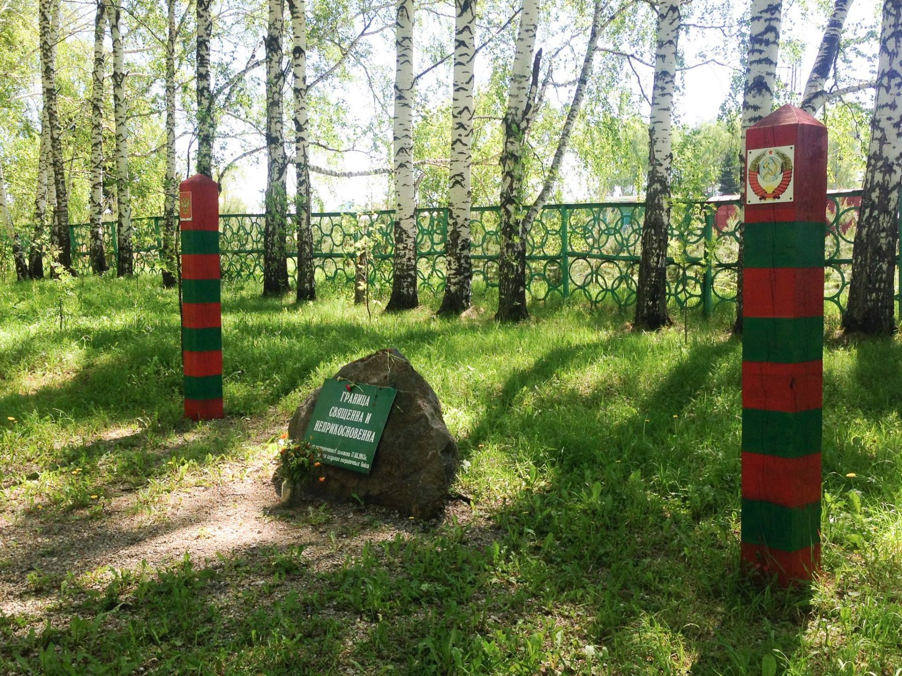

Когда я был ребёнком, а в СССР со дня на день ожидали коммунизм, в посёлке Ижморский был Парк культуры и отдыха.
В парке был тир, аттракционы «Ветерок», «Ромашка», «Лодочки» и самое настоящее колесо обозрения, которое все называли «Чёртово колесо». Почему-то потом я такого названия ни разу не встречал. С верхушки колеса обозрения было видно весь посёлок и немножко светлое будущее.
В конце 80-х будущее стало понемногу темнеть. После одной из зим на аттракционы не вернули кабины.
На остове «Ромашке» мы ещё пару лет играли в догонялки, раскручивая её руками, и убегая по ней, крутящейся, от водящего. Это развивало силу рук, ловкость и координацию. Кто-то, помню, упал и сломал ногу, но до детских омбудсменов было ещё несколько десятков лет, поэтому игра просто продолжилась на следующий день.
В начале 90-х в тире открыли бар, и, признаться, я бывал там чаще, чем на работавших когда-то аттракционах.
Потом аттракционы разобрали вовсе, парк стал зарастать травой, асфальтовые когда-то дорожки исчезают под натиском природы.
Рядом с парком с переменным успехом теперь строят большую церковь, а в парке 4 года назад установили символические пограничные столбы и камень с прикрученной пластиковой табличкой с надписью «ГРАНИЦА СВЯЩЕННА И НЕПРИКОСНОВЕННА».

Пришло новое время. Теперь в посёлке есть Мария-РА, Ярче и Магнит. Люди пьют, и сидят в интернете. Из развлечений только надувной батут на главной площади и поход на кладбища в родительский день и на Троицу. Кладбищ, кстати, теперь два.
Культуру и отдых сменила традиция поклонения новым символам: в том числе пограничным столбам в углу парка на месте бывших аттракционов.